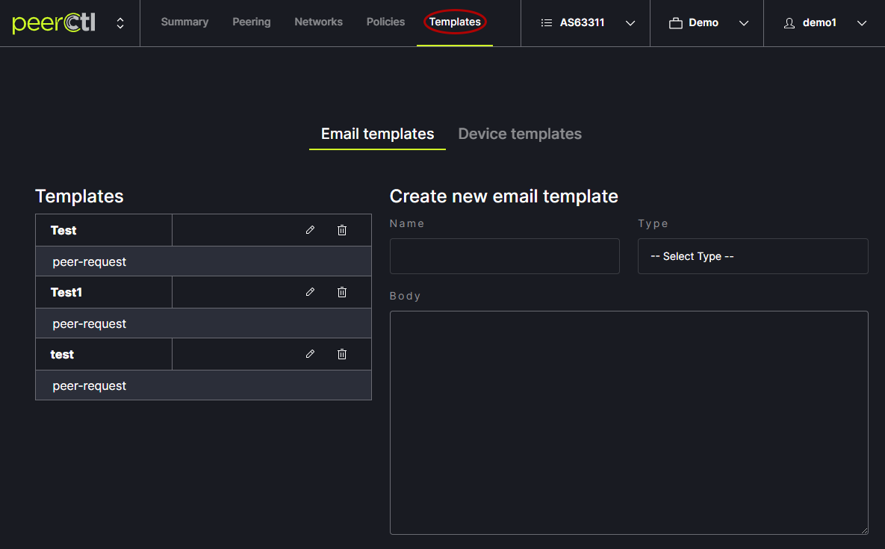
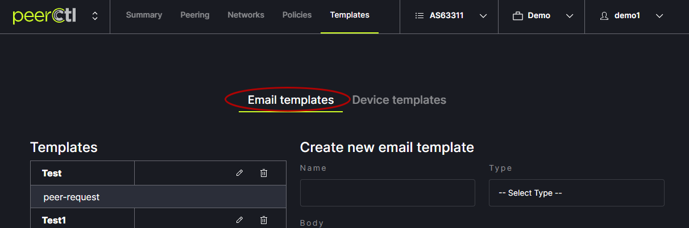
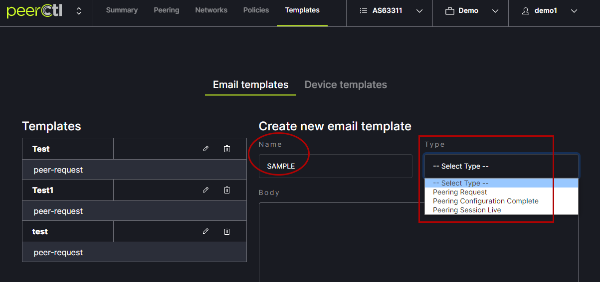
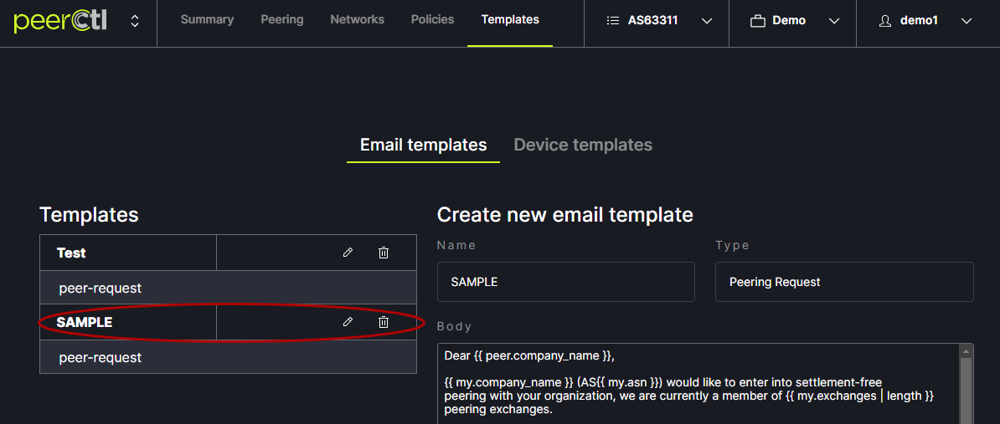
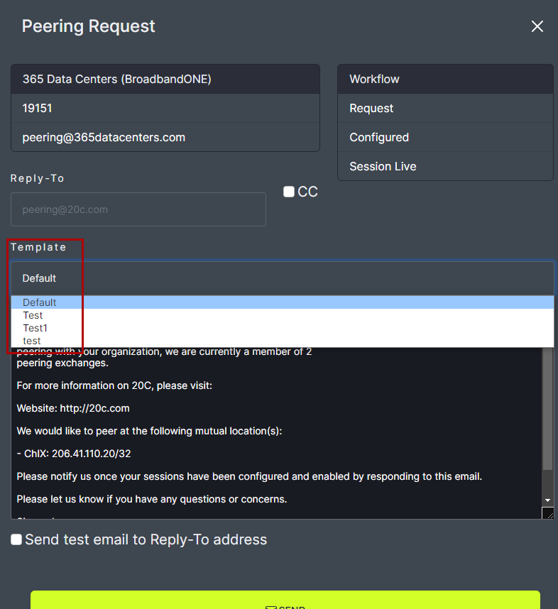

Custom Email Templates
To create custom emails, close the Request Peering popup box and click on the Templates tab at the top of the window. 
Click on Email Templates at the top of the window. 
Enter a name for the custom Template. Choose the Type of Template to be customized. Each type of template is based on one of the three steps in the Request Peering process. The default text will appear in the Body box and can be edited. Changes can be viewed in the Preview box below the Edit box. Edits are saved using the Save link at the bottom of the window. Custom email Templates will appear in the Request Peering pop-up box. 
The default text will appear in the Body box and can be edited. Changes can be viewed in the Preview box below the Edit box. Edits are saved using the Save link at the bottom of the window.

Note: The following variables autofill into the email based on your network settings. These variables should not be edited.
-
peer- peer network objectpeer.company_name- organization name of the peer networkpeer.asn- ASN of the peer network
-
my- my network objectmy.company_name- organization name of your networkmy.asn- ASN of your networkmy.website- URL of your website (as obtained from PeeringDB data)
-
mutual_locations- list of mutually shared exchangesexchange.name- name of the internet exchangeexchange.ip4- ip4 addressexchange.ip6- ip6 address
-
selected_exchanges- list of selected exchanges when opening a peering request through the Networks viewexchange.name- name of the internet exchangeexchange.ip4- ip4 addressexchange.ip6- ip6 address
Note: List of jinja variables:
-
sessionslist of session objects available onSession ConfiguredandSession Liveemailssession.peer_ip4peer ipv4 address for the sessionsession.peer_ip6peer ipv6 address for the sessionip4: ipv4 address for the sessionip6: ipv6 address for the sessionprefix_length4: max prefixes ipv4prefix_length6: max prefixes ipv6
The newly added Template will appear in the Templates list. It can be edited or deleted from here. 
Custom email Templates will appear in the Request Peering popup box. 